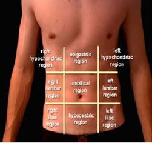
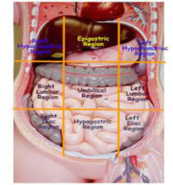
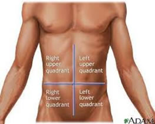
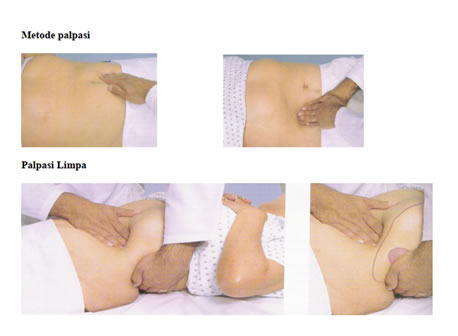
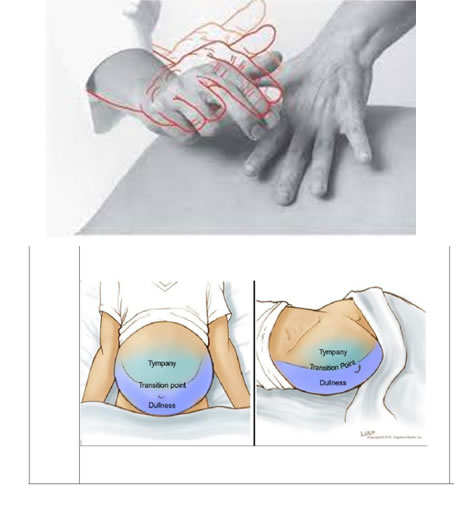
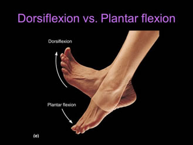

Pemeriksaan Inspeksi dan Palpasi Keadaan Ekstrimitas :
1. Inspeksi :


2. Auskultasi

3. Palplasi
Sebelum palpasi, tangan diusahan hangat sesuai suhu ruangan/tubuh

4. Perkusi

Pemeriksaan :
Inspeksi dan Palpasi Keadaan Ekstrimitas
Cara Kerja :
Alat bantu jalan
Ulkus diabetikum
Kontraktur sendi lutut
Edema kaki (pitting edema)
Pemeriksaan :
1) Pangkal paha : abduksi, adduksi, rotasi ke dalam, rotasi keluar
Cara Kerja :
2) Lutut : fleksi, ekstensi (depan belakang)
3) Pergelangan Kaki : Dorsifleksi, Plantar Fleksi, Inversi, eversi

4) Jari kaki : ekstensi, fleksi, Abduksi, adduksi
Pemeriksaan :
1) Refleks Patellar
Cara Kerja :
Refleks Patella
2) Refleks Achilles
Refleks Achilles
3) Kekuatan Otot Kaki
Inspeksi dan Palpasi
Dropdown content#1